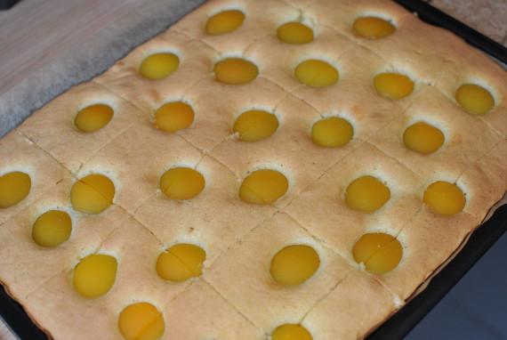

Aprikosenkuchen

- Zubereitung: ca. 20 Minuten
- Backen: ca. 25 Minuten
- Für 1 Backblech
Zutaten
- 180 g Butter
- 190 g Zucker
- 350 g Mehl
- 1 Pck. Vanillezucker
- 1 Pck. Backpulver
- 5 EL Milch
- 3 Eier
- 1 Glas Aprikosen
Zubereitung
- Butter, Zucker, Eier und Vanillezucker verrühren. Mehl mit Backpulver vermischen und darunterheben. Die Milch dazugeben.
- Den Teig auf ein gefettetes Backblech geben und gleichmäßig verteilen. Mit Früchten belegen und im Ofen auf mittlerer Schiene bei 180° Celsius ca. 20 bis 25 Minuten backen.